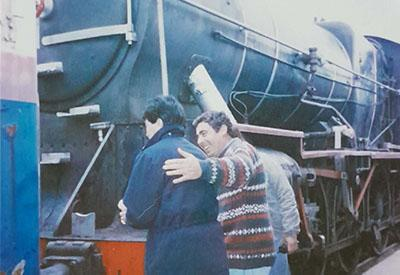
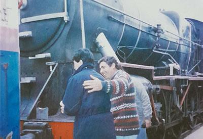
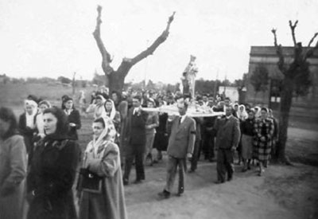
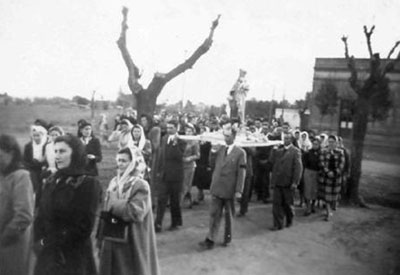
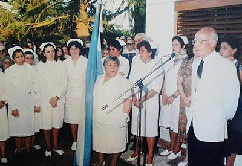
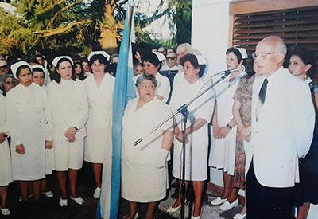

Crónicas de Pasteur
¡Bienvenidos a Crónicas de Pasteur!
Pasteur es una pequeña localidad situada en el noroeste de la provincia de Buenos Aires,
Argentina, y forma parte del partido de Lincoln. Fue fundada en 1909 por el comerciante español Manuel
Antonio García Meijón. Pasteur es la tercera localidad más poblada del partido de Lincoln.
El nombre de la localidad fue dado por tres amigos que se hallaban por zonas
aledañas. Al observar algunas de las pocas casas levantadas en la lejanía, comenzaron a seleccionar
nombres.
Se decidió que se llamaría Pasteur por el biólogo y químico francés, Louis Pasteur (1822-1898).
Cómo moverse en el entorno
Controles
Clic izquierdo o tocar la pantalla: Seleccionar elemento o punto de interés
Presionando clic izquierdo o tocando la pantalla: Rotación de la cámara
Rueda del ratón o pellizcar la pantalla: Zoom de la cámara
Cómo interactuar en el entorno
Interacción
Dentro del entorno existen varios puntos y elementos interactuables, desde instituciones hasta
objetos.
Podrás seleccionar alguno de ellos y clicarlo con el botón izquierdo del ratón o tocando la pantalla para
mostrar información
sobre
el mismo.
Se desplegará sobre el lado derecho un panel con información sobre su fundación o biografía, fotos
históricas
o contenido relacionado.

Localidad de Pasteur


Manuel Antonio García Meijón (1856-1942)
Nació el 5 de abril de 1856 en el pueblo de Cotobad, Galicia, España. Sus padres fueron José
García y
María Meijón. Arribó a nuestro país en 1874 y comenzó a trabajar en una despensa de la ciudad de Junín, así como
también lo hizo en las ciudades de San Antonio de Areco y San Andrés de Giles. En 1882 se estableció en Lincoln
y
creó su cadena de almacenes, llamada "El Sol de Mayo", la cual trasladó a las distintas localidades que fundó,
entre ellas Arenaza (1904), Martínez de Hoz (1904), Bermúdez (1909), El Triunfo (1909), Pasteur (1909) y Roberts
(1916).
Asimismo, fue uno de los socios fundadores de la Sociedad Española de Socorros Mutuos (1884), la
Biblioteca
Escolar Popular Pestalozzi (1889) y el Banco Popular de Lincoln (1903). Propietario de grandes extensiones de
campo, se interesó por el progreso de la región, y su gestión hizo posible la construcción de la línea
ferroviaria
de Los Toldos a Ingeniero Luiggi, que pasaba por varias localidades de Lincoln. También se dedicó a la compra y
venta de cereales en varias zonas del país, e incluso realizó experimentos con semillas que importaba desde
Europa, por lo que a su campo lo llamó "La Experimental".
Quebrado económicamente a causa de la sequía en 1911 y las inundaciones de 1912 a 1914, se instaló en
Pasteur,
donde pasó sus últimos años de vida. Enfermó gravemente y falleció en el Hospital Español a los 86 años en
Buenos
Aires, el 6 de agosto de 1942. Sus restos descansan en el Cementerio de Lincoln, en el Panteón de la Sociedad
Española de Socorros Mutuos.
La Piamontesa
La Piamontesa de los dueños Alais y Gagliardi, fue un hotel y restaurante fundado en 1908, el cual se
convirtió en el
refugio perfecto para el fundador durante sus visitas a la localidad.
Durante sus años de funcionamiento, este establecimiento recibió a innumerables huéspedes que disfrutaron de
sus cómodas habitaciones y su elegante comedor. La Piamontesa era famosa por la calidad y variedad de sus
comidas
italianas y los mejores vinos y bebidas alcohólicas importadas.
Entre sus huéspedes destacados estuvieron el Dr. Abatte y el Dr. Raúl Alberto Cabaleiro. También, actores y
actrices como Norman Brisky, Perla Santalla, Eva Franco y los hermanos Aída y Jorge Luz se hospedaron aquí
durante
el rodaje de la película "Juguemos en el Mundo" dirigida por María Herminia Avellaneda.
El 22 de marzo de 1980, a las 9 horas, comenzó el remate de la colección de bebidas añejas, elementos,
utilidades, muebles, vajillas y antigüedades que formaban parte del aclamado hotel. Posteriormente, el edificio
fue derrumbado y, en la actualidad, el terreno se encuentra baldío.

 


Estación de Ferrocarril de Pasteur
El Ferrocarril Oeste de Buenos Aires (FCO), inaugurado el 29 de agosto de 1857, fue el primero construido
en
Argentina. Este mismo se renombró como Ferrocarril Domingo Faustino Sarmiento.
El terraplén del ferrocarril en Pasteur se levantó en 1909, pero el primer tren de pasajeros pasó el 15 de julio
de 1910. Fue Manuel Antonio García Meijón, quien gestionó la construcción de la línea ferroviaria desde Los
Toldos
hacia
Ingeniero Luiggi.
La estación operaba diariamente, con trenes de pasajeros que viajaban desde Once a Pasteur de lunes a
viernes
y de Once a Ingeniero Luiggi los martes y sábados por la tarde. El recorrido duraba aproximadamente 7 horas. Los
menores de 3 años pagaban medio boleto, mientras que los mayores pagaban el boleto completo.
Los trenes de carga, que transportaban ganado vacuno y porcino, cereales y lana ovina, operaban los lunes y
sábados hacia la Estación Mecha (cercana a Bragado). Generalmente, el ganado iba al matadero y la lana se vendía
en el mercado de Avellaneda.
Se trabajaba en dos turnos de ocho horas: uno comenzaba a las 4:00 a.m. y el otro a las 4:00 p.m. El trabajo
incluía atención al público, limpieza de la estación, movimientos en la playa y control de señales. El equipo
estaba formado por un jefe de estación y dos auxiliares, quienes ejecutaban las órdenes y podían ser
transferidos
a otras estaciones cercanas.
Los pasajeros habituales eran pobladores locales que viajaban a diversos destinos. También había un comisionista
que viajaba regularmente desde Once a Pasteur y viceversa. Las encomiendas, como aves de corral y conejos, se
despachaban en coches particulares para encomiendas.
La comunicación con el resto de las estaciones se realizaba mediante telégrafo o por medio de un teléfono
interno.
En caso de emergencia, se usaba la unión telefónica o se daba aviso al maquinista para que procediera con
precaución si no había comunicación con la siguiente estación.
La actividad de la estación comenzó a declinar con las privatizaciones durante el gobierno de Carlos Saúl
Menem. A
partir
de entonces, el tren dejó de operar rutinariamente y solo era solicitado por estaciones vecinas. El último
empleado fue despedido el 28 de febrero de 2002.
La estación ya no presta servicios de pasajeros y sus vías, concesionadas a Ferroexpreso Pampeano, están
inactivas y en estado de abandono. La estación se encuentra a 376,5 km de la Estación Once. Aunque ya no se usa
para el transporte ferroviario, las instalaciones se han adaptado para albergar diversos talleres y actividades,
así como una Biblioteca y Museo Municipal.
Escuela Primaria N°22 "Luis Pasteur"
Fue fundada en marzo de 1911 y comenzó a funcionar el 20 de septiembre del mismo año con la concurrencia de
30 alumnos. La primera maestra y directora fue Amelia Canaveri, quien se jubiló en 1915. En ese entonces, la
institución funcionaba en la esquina de la calle Mitre. Luego fue trasladada en 1920 al local sobre la calle
Juan Bautista Alberdi (actualmente,
se encuentra la Escuela de Educación Secundaria N°7 “Mariano Moreno”). Hasta ese entonces, se dictaban clases
hasta 4.º grado en dos turnos: mañana (3.º y 4.º grado) y tarde (1.º y 2.º grado).
En 1924, se trasladó a un local en la calle 9 de Julio y estaba conformada por dos salones separados con dos
tabiques simples y un cuarto para la dirección. El
cuerpo docente de ese momento estaba constituido por las hermanas Moglia, Videla, Audición, Ríos, Angélica
Deluchi, Magdalena Bongiorno, María Trono, Irma Travellay y Rodríguez Naso.
En 1931, se trasladó a un local en la esquina de la
calle Juan Veintitrés. Además, se logró agregar hasta 6.º grado, llegando
nuevos docentes a la institución: Teresa Repossi, Sara Arribalzaga, María Pérez, Josefina Caivano, Luisa Di
Sarli, María Casani y Soifer.
El 9 de julio de 1940, se colocó en la fachada de la escuela la placa de “Louis Pasteur”, nombre designado
por el Honorable Consejo de la Educación de La Plata. El 25 de octubre de 1942, se recibió una nota de la
Dirección General de la Escuela del 28 de septiembre para adquirir un terreno y levantar el edificio de la
institución. Además, se dieron facultades para adquirir los terrenos situados frente a la plaza principal, donde
se encuentra actualmente.
En 1947, funcionaba en un terreno frente a la plaza. En noviembre de 1958, se
presentó una solicitud por el mal estado del edificio, lo que obligó a dictar clases al aire libre. Se trasladó
al edificio de la Ex-Sociedad Italiana hasta finalizar el ciclo lectivo. En 1961, se ubicó en un terreno con
casillas rodantes. En 1963, comenzó a funcionar en el edificio actual frente a la Plaza San
Martín.
En 1997, se incorporaron 7.º y 8.º año articulados con el ex Instituto Mariano Moreno (actual Escuela de
Educación Secundaria N°7). En 1998, se realizó una
ampliación del edificio, con reparaciones en los baños y la construcción de una dirección y una secretaría. En
1999, se comenzó a construir el Salón de Usos Múltiples (SUM) a cargo de la municipalidad.
Con el transcurso de los años, se incorporó también el bachillerato para adultos y talleres en contraturno
para los alumnos. Además, se realizó un aula para computación y se recibieron computadoras, libros, entre otros
objetos que fueron donados o adquiridos


 


Parroquia Nuestra Señora del Carmen
La piedra fundamental data del 1 de septiembre de 1912 en el terreno donado por el fundador, Manuel
Antonio
García Meijón. Anteriormente, las primeras misas se dieron en un antiguo cine.
Las primeras confirmaciones se concedieron en 1922 y los primeros bautismos en 1923.
La iglesia fue destruida poco tiempo después de haber sido construida por un fuerte viento. En 1930, se formó
una
comisión para la “Restauración de la Iglesia Nuestra Señora del Carmen”. La inauguración del templo se realizó
el 14 de julio de 1932 y se le dio el nombre de “Nuestra Señora del Carmen”, estando a cargo de la parroquia de
Roberts. El 16 de julio del mismo año se otorgó la bendición de la obra de reconstrucción de la iglesia y la
casa
parroquial.
En 1931, se celebraron las primeras fiestas patronales, dando inicio a una tradición que continuaría en los
años
posteriores. La primera boda se celebró en 1934.
El 13 de noviembre de 1965, el Padre Carlos Mullins se hizo cargo de la capilla y comenzó a residir en la casa
parroquial en Pasteur, aledaña al templo. En 1966 se otorgó la bendición al Monumento de la Madre. Durante este
año, se autorizó la utilización del guardapolvo escolar para las comuniones.
En 1976, se inició la construcción del polideportivo, que se encontraría en la parte trasera de la capilla.
En 1980, el curso de catecismo comenzó a dictarse con una duración de dos años de preparación. En 1983, se
construyó el salón parroquial, aledaño a la parroquia. Asimismo, el 1 de octubre de 1985 comenzó la ampliación
del
templo. El 3 de mayo de 1985, obtuvo el rango de Cuasiparroquia y en 2004 fue anexada a Roberts por decreto
episcopal.
En 2000, se comenzó a utilizar la sala de catequesis y el 11 de abril de 2005 volvió a tener el rango de
capilla.


María Herminia Avellaneda (1933-1997)
Nació el 3 de noviembre de 1933 en Pasteur, Lincoln, Buenos Aires. Fue una destacada cineasta y productora
argentina, reconocida por su contribución al cine y la televisión del país.
Comenzó su carrera en la televisión a los 22 años y dedicó más de cuatro décadas a dignificar este medio,
convirtiéndose en una pionera del género. En 1984, se convirtió en la directora artística de ATC (Argentina
Televisora Color), dejando una huella significativa en la industria con su enfoque feminista y su pasión por la
calidad artística. Avellaneda también fue conocida por su capacidad para contar historias y su espíritu
generoso,
tanto en su vida personal como profesional.
En 1971, filmó su primer largometraje, "Juguemos en el mundo", basado en un guión de María Elena Walsh. En
1980, realizó su segundo film, "Rosa de lejos", protagonizado por Leonor Benedetto (versión fílmica de una
exitosa
telenovela).
Entre sus logros, destaca su esfuerzo por promover la libertad, la solidaridad y la dignificación de la mujer a
través de su trabajo. En 1981, recibió el Diploma al Mérito de los Premios Konex como una de las cinco mejores
directoras de televisión de Argentina.
Falleció víctima de un cáncer a los 63 años el 7 de julio de 1997 en Buenos Aires.
Juguemos en el mundo (1971)
"Juguemos en el mundo" es un film argentino de 1971 dirigido por María Herminia Avellaneda y escrito por
María Elena Walsh. La película, una comedia de 1 hora y 45 minutos, narra las aventuras de Doña Disparate y
Bambuco, quienes, cansados de la vida en la ciudad, huyen en su coche destartalado y llegan por casualidad a un
pueblito de La Pampa. Allí, revolucionan la aldea, asumen el gobierno temporalmente y luego se marchan. La
película mezcla fantasía ingenua con sátira política.
Fue rodada casi en su totalidad en Pasteur, incluso muchos de los pobladores participaron del rodaje,
conviviendo con varios artistas nacionales como Virgina Lago, Norman Briski, Jorge y Aída Luz, Hugo Caprera y
Eva
Franco.
Por su actuación en este film, Perla Santalla fue galardonada con el Premio Cóndor de Plata a la mejor
actriz de reparto.
Contenido relacionado
 

Dr. Raúl Alberto Cabaleiro (1919-2001)
Nació el 4 de septiembre de 1919 en Capital Federal, Buenos Aires. Su formación académica comenzó en la
Universidad de Buenos Aires (UBA), dónde estudió en la Facultad de Medicina. Fue practicante de laboratorio y en
guardia durante el pre-grado en el Hospital de Rivadavia de Buenos Aires. Tras graduarse, sirvió en el Ejército
Argentino como Teniente Médico durante su servicio militar en Salta.
En Pasteur, trabajó como médico interino en la Unidad Sanitaria y se hospedaba en el Hotel "La Piamontesa".
Se casó con Etelvina Justa y formaron una familia con 8 hijos, los cuales le dieron 29 nietos y bisnietos.
Como médico de la localidad, ayudó a quienes lo necesitaban sin importar la hora o las condiciones climáticas,
ya fuera desde su consultorio, en la Unidad Sanitaria o en el domicilio de la persona. Incluso, a veces
utilizaba su propio dinero para cubrir gastos médicos y, ante la falta de ambulancia en la localidad,
transportaba a los enfermos en su propio automóvil. También fue uno de los fundadores del Instituto Mariano
Moreno (IMM), donde fue rector. Eligió el nombre del colegio en honor a Mariano Moreno, ya que era un seguidor
de sus ideas. Además, también creó el primer comedor escolar e integró las comisiones del Club Atlético Pasteur
y Ferro Carril Oeste y la Cooperativa Eléctrica.
En su vida personal, el Dr. Cabaleiro fue un hombre de familia, conocido por inculcar valores y mantenerse
cercano. Le apasionaba la lectura y siempre estaba en constante aprendizaje. Desde medicina, hasta novelas de
historia, arte y música, sus intereses eran vastos. En su juventud, incluso tocaba el violín y tenía un profundo
aprecio por la naturaleza y las actividades rurales, como mantener una huerta.
Su relación cercana con la comunidad fue clave para su éxito. En cada familia de Pasteur, hay historias que
ilustran el profundo respeto y agradecimiento que la comunidad le tiene. Más allá de sus responsabilidades
formales, el Dr. Cabaleiro ayudaba a quien lo necesitara, ya fuera en casos de accidentes, enfermedades o
simplemente para brindar apoyo emocional en momentos difíciles. Falleció el 10 de marzo de 2001. Actualmente, es
considerado el máximo referente de Pasteur y el geriátrico de la localidad lleva su nombre.

Club Atlético Pasteur y Ferro Carril Oeste
En 1943, existían dos importantes clubes que competían por la supremacía futbolística en el pueblo. Ante
problemas económicos, surgió la idea de fusionar al Club Atlético Pasteur y al Club Ferrocarril Oeste. A través
de una asamblea extraordinaria, los presidentes Alberto Guidobono y Juan José Giorello informaron la decisión.
Se acordó unir los nombres y adoptar la camiseta con los colores verde y blanco. La fundación del Club Atlético
Pasteur y Ferrocarril Oeste se oficializó el 1 de enero de 1944.
La sede social se encuentra en la Avenida Mitre y cuenta con un buffet, una casa habitación para el conserje
y un salón de fiestas, que fue inaugurado en 1946 con un gran baile. Asimismo, disponían de un campo de
deportes, canchas auxiliares e iluminación para encuentros nocturnos.
En 1957, participaron en el campeonato y obtuvieron su primer título en una de las cuatro zonas que
integraban la Liga del Oeste de América. Posteriormente, atravesaron un período de inactividad deportiva hasta
su afiliación a la Liga de Ameghino de Fútbol, que incluía al Club Deportivo Granada, Deportivo Pinto, Club
Pintense, Sarmiento de Pinto, Sarmiento de Ameghino, Club Atlético Blaquier y Club Atlético Ameghino.
Cabe destacar que los fondos para la campaña futbolística eran insuficientes, por lo que los habitantes de
Pasteur comenzaron a recaudar dinero para apoyar al club y mantener las instalaciones (es decir, sembrar el
campo, mejorar el alambrado, baños, vestuarios, etc.). El primer juego de camisetas fue donado por
una reconocida e importante firma agrícola-ganadera.
En 1973, consiguieron su segundo título en su propia cancha, tras derrotar por 3 a 1 al Club Sarmiento de
Ameghino.
Unidad Sanitaria
Inició sus actividades el 11 de octubre de 1950 y fue inaugurada oficialmente el 12 de noviembre del mismo
año. En un principio, contaba con un médico directo, una enfermera recibida y dos enfermeras sin título, además
de cinco empleados. La instalación tiene cuatro salas de internación (dos grandes y dos chicas), una sala de
operaciones, una sala de parto, una sala de rayos, un consultorio, una morgue, una farmacia, una sala de
enfermería de guardia, una sala de esterilizar. El radio que cubría dicha institución comprendía a pueblos
cercanos como Porvenir, Encina, Timote, Necol, entre otros. El promedio de internados y atendidos era de diez
personas por día, además de inyecciones que se colocan permanentemente. La asistencia que se prestaba es de
aplicaciones de rayos, operaciones y partos, entre otros.

Jardin de Infantes N°902 “Sara Chamberlain De Eccleston”
Es un jardín de infantes rural de gestión pública ubicado en la Avenida San Martín. Su historia comienza en
el año 1961, cuando la directora de la Escuela Primaria N.º 22 “Luis Pasteur”, Emma Diana de Vicente, solicitó
la creación de un preescolar, pero fue denegada debido a la falta de un edificio con las condiciones adecuadas.
En 1962, se obtuvieron las instalaciones necesarias y, al año siguiente, se iniciaron las gestiones en la ciudad
de La Plata.
Durante el año 1964, con la ayuda de los habitantes y una cooperadora, se consiguieron, a través de
donaciones, los muebles adecuados para el jardín. Asimismo, la institución fue inaugurada por decreto. Cabe
destacar que Estancias y Cabañas “Las Lilas” donó varios elementos como el mástil y la bandera. Incluso, un
pequeño parque recreativo con hamacas, calesitas, arenero, tobogán, entre otros juegos, fue donado por comercios
locales como “LaFuente y Trubbo”, “La Unión” y “Casa Pereda”. En ese momento, la institución funcionaba en un
local cedido por la Escuela Primaria N.º 22 “Luis Pasteur”, que anteriormente servía como casa-habitación.
Consecuentemente, el jardín comenzó a operar en 1965, bajo la dirección de la Sra. Irma Sylvia Trubbo. Hasta
1969, funcionó en el mismo edificio de la Escuela Primaria N.º 22. Posteriormente, durante el período de 1970 a
1974, se trasladó a la esquina de la Av. Montes e Independencia. Luego, entre 1975 y 1976, estuvo ubicado sobre
la calle Sarmiento, entre Maipú y la Av. Mitre, hasta que volvió a funcionar en la Escuela Primaria N.º 22 desde
1975 hasta 1985.
El 25 de mayo de 1985 se inauguró el nuevo y actual edificio, el cual fue adquirido por la Cooperadora y
donado al Ministerio de Gobierno de la Provincia de Buenos Aires para que comenzara la construcción.
Para 1994, ya contaba con un equipo de psicología o equipo de orientación escolar. Además, en ese entonces,
la matrícula era de 120 alumnos, de los cuales egresaban entre 40 y 45. Actualmente, la institución cuenta con
un parque más amplio con juegos recreativos, cuatro aulas equipadas con elementos y mobiliario específico para
los infantes, baños diferenciados para niños, niñas y docentes, una cocina, una dirección, dos depósitos, un
Salón de Usos Múltiples (SUM) y una sala de música.
Escuela Educación Secundaria N°7 "Mariano Moreno"
Anteriormente a su gestión estatal, la institución se llamaba Instituto de Enseñanza "Mariano Moreno"
(IMM), el cual comenzó a funcionar el 12 de mayo de 1967, gracias a una cooperadora nombrada con el mismo
nombre. Los vecinos de Pasteur adquirieron el edificio, que contaba inicialmente con tres aulas y una biblioteca
con alrededor de 600 libros, además de contar con
docentes y profesionales. Dicha institución era de gestión privada, aunque los sueldos del personal
provenían del Estado. En ese entonces, había 90 alumnos inscritos y ya
habían egresado 37.
Es importante destacar que, a partir de 1962 y 1963, el instituto ya funcionaba como una casa de estudio a
la que asistían algunos estudiantes, aunque estos no podían validar sus conocimientos con un título, ya que la
institución no era reconocida como educativa por el Estado.
El 2 de mayo de 2011, comenzó a operar la Escuela de Educación Secundaria N°7 (EES N°7), dejando atrás su
gestión privada y pasando a ser de gestión estatal, con una matrícula de 167 alumnos. La institución cuenta con
6 aulas, una cocina, 3 baños (para varones, mujeres y personas con discapacidad), un depósito, dirección,
secretaría, salón de actos y un laboratorio.
Trío Pasteur (1986)
El Trío Pasteur es un conjunto de música folclórica compuesto por Castro, Grande y Muñoz, tres músicos
autodidactas que, desde sus inicios en 1986, han dejado una huella imborrable en la música popular de la
región.
El trío surgió casi por casualidad durante una fiesta familiar en Pasteur, donde Norberto “Tito” Muñoz,
Francisco “Pichón” Grande y “Chirola” Ibáñez se encontraron compartiendo su amor por la música. Aunque
comenzaron como un pasatiempo, pronto se profesionalizaron a pesar de no contar con formación musical formal.
Inicialmente, Muñoz era la primera voz y tocaba el bombo, mientras que Ibañez y Grande se encargaban de las
guitarras.
Sin embargo, por cuestiones laborales y la distancia, Ibañez tuvo que abandonar el grupo, siendo reemplazado
por “Pati” Castro, quien asumió la primera guitarra y la tercera voz, mientras que Grande pasó a ser la segunda
guitarra y segunda voz.
El Trío Pasteur comenzó tocando en su localidad natal, pero no tardaron en ganar reconocimiento regional.
Su primera gran victoria fue en un festival en Tres Algarrobos, donde ganaron un premio que los llevó a actuar
en la radio y televisión locales. A partir de ahí, el grupo participó en importantes festivales, como el de San
Gregorio en 1988, donde presentaron la famosa "Zamba para Pasteur", obteniendo el primer lugar en las categorías
de canción inédita y canto. El trío siguió recorriendo localidades como General Pinto y Luján, y se presentaron
en numerosas radios y televisiones regionales, donde fueron bien recibidos por parte del público.
El gran salto a nivel nacional llegó en 1994, cuando se presentaron en el Festival Nacional de Música
Popular de Baradero, ganando el concurso y obteniendo como premio una actuación televisada y la grabación de un
cassette. Ese mismo año, participaron en el prestigioso Festival Nacional de Folklore de Cosquín, consolidándose
como un grupo destacado en la escena folclórica Argentina.
El estilo musical del Trío Pasteur estaba influenciado por artistas de renombre como César Isella, Argentino
Luna y Waldemar Lagos, entre otros. Grande, quien componía gran parte de las canciones del grupo, se inspira en
personajes de la localidad y en temáticas propias del folclore tradicional. Definía su estilo como "norteño" y
"carpero", una mezcla de sonidos arraigados en el folclore más puro.
El trío grabó tres cassettes y discos, con un proceso de grabación que reflejaba el trabajo en equipo:
mientras uno componía, el resto se encargaba de ensayar y crear las bases musicales. El primer cassette fue
grabado en Buenos Aires, y los siguientes en Junín.
Con el paso del tiempo, la avanzada edad de los integrantes comenzó a afectar la actividad del grupo.
Además, la muerte de una persona muy cercana a Castro y Grande influyó profundamente en la continuidad del trío.
Actualmente, el Trío Pasteur sigue activo de manera esporádica, tocando en el Festival Nacional de Folklore de
Pasteur y en otras oportunidades, manteniendo viva la llama de la música folclórica que tanto aman y
transmitiendo su legado a las futuras generaciones.
Contenido relacionado

Centro Educativo Complementario N°803
El 4 de junio de 1972, la directora de la Escuela Primaria N°22 “Luis Pasteur” expuso la necesidad de un
centro educativo complementario. La comisión comenzó las gestiones en 1973, teniendo el aval de la Dirección de
Psicología y Servicio Escolar, pero sin obtener respuesta alguna por parte del Estado. La comisión se
comprometió a ceder instalaciones, equipamiento y ampliar lo existente con el fin de lograr la creación de la
institución. Esta era una obra de suma necesidad debido a la presencia de un gran número de niños que carecían
de múltiples recursos, estímulo, apoyo en el ámbito familiar y ambiental, entre otros.
En 1986, se reiniciaron las gestiones y trámites, teniendo en cuenta las carencias y aspectos que
propiciaron la creación del centro. En 1987, comenzó a funcionar el Centro Educativo Complementario N° 803. La
institución fue creciendo con el tiempo. En un primer momento, se lograron dos aulas, un cuarto para dirección,
un baño para el personal y un gabinete, baños para niñas y niños, se amplió la cocina y se adaptó un espacio
para el depósito.
El 17 de noviembre de 1992, quedó oficialmente inaugurado tras cinco años de funcionamiento adecuado y
comenzó a conocerse como “La Abejita”, nombre atribuido por el trabajo en grupo de las abejas en su colmena. La
institución funciona en doble turno (mañana y tarde) y cuenta con un salón grande utilizado como comedor. Para
recreación, tiene un espacio cedido frente a la institución, el cual está alambrado y cuenta con juegos de
parque y cancha de fútbol. El C.E.C. se fue convirtiendo en una institución de suma relevancia para
la comunidad, participando incluso en celebraciones de fiestas patrias, cumpleaños de la localidad, el Festival
Nacional de Folclore, festejos de carnaval con carrozas, murgas y reinas, y también generando un vínculo con la
comunidad del pueblo.


Festival Nacional de Folklore de Pasteur
El Festival Nacional de Folklore de Pasteur, también conocido popularmente como "Festival de la Amistad",
nació en 1993 con el objetivo de mantener vivo el canto, la música y la danza de la región, por una comisión
formada durante 1992. Este evento crea un punto de encuentro e intercambio cultural entre localidades y ciudades
de todo el país, fomentando sentimientos de libertad, solidaridad, respeto y convivencia.
En el festival se entregan premios a los bailarines en diversas categorías: materna-infantil, malambo
infantil, solista y conjunto de malambo, y pareja estilizada y tradicional, entre otros. Los primeros cuatro
festivales se
llevaron a cabo en el estadio del Club Atlético Pasteur y Ferro Carril Oeste (1993, 1994, 1995 y 1996).
Posteriormente, se trasladó a un predio especial con infraestructura propia, donde se celebró hasta 2023.
Cada año, durante cuatro días, el festival reúne a grandes artistas locales y nacionales. Entre los artistas
que han participado se encuentran Los Nocheros, El Chaqueño Palavecino, Los Chalchaleros, Tamara Castro, Luciano
Pereyra, Horacio Guarany, Peteco Carabajal, Argentino Luna, entre otros de renombre. Además, delegaciones
compiten
en los rubros de danza y canto.
El festejo también incluye un desfile de emprendados, carruajes, maquinarias agrícolas y delegaciones de
instituciones invitadas. Asimismo, se organiza en paralelo una feria artesanal que atrae a muchos visitantes
para
apreciar este evento.
Contenido relacionado
¿Lincoln o Florentino Ameghino?
Hace muchos años, en los primeros tiempos de la fundación de la localidad, se gestó un plan que pocos
conocen... un proyecto que, en su momento, fue considerado por algunos como visionario, mientras que otros lo
veían como una locura. Se propuso nada menos que anexar el pueblo al recién creado partido de Florentino
Ameghino.
La idea era ambiciosa: conectar las instituciones locales para facilitar trámites, operaciones mercantiles y
particulares, aprovechando la topografía de los campos y las crecientes actividades agropecuarias.
Sin embargo, el autor del proyecto, desconocía realmente las verdaderas necesidades y dificultades de los
habitantes de esta localidad. La idea de llevar a cabo este plan se desvaneció entre murmullos y
desacuerdos. Se temía que, de haberse realizado, los pobladores habrían quedado aislados, obligados a realizar
largos viajes hacia la nueva ciudad cabecera.
Cementerio de Pasteur
En el año 1922, Manuel Antonio García Meijón, el fundador de la localidad, donó la tierra destinada para lo
que sería el cementerio de Pasteur. Este lugar no solo marcó un espacio de reposo para los habitantes del
pueblo,
sino que también se convirtió en un sitio que guarda historias silenciosas.
La primera persona sepultada en este cementerio fue una pequeña niña llamada Rita Fernández, quien falleció
a
la corta edad de dos años. Años más tarde, en 1933, el cementerio recibió su bendición oficial, consolidándose
como un espacio sagrado y fundamental en la vida de la comunidad.
Monte del ahorcado
Hace muchos años, en tiempos de sequía y hambruna, cuando los camiones y carros aún no existían, los
arrieros
enfrentaban desafíos inmensos. Uno de ellos, un hombre conocido por su responsabilidad y dedicación, se
convirtió
en protagonista de una historia que ha perdurado en la memoria de los pobladores.
Este arriero, acompañado de dos hombres y su ganado, emprendió un largo viaje por calles y campos secos,
llevando consigo la esperanza de salvar a un conjunto de vacas. Sin embargo, el calor abrasador y la falta de
agua
hicieron estragos en el rebaño. Muchas vacas, debilitadas por la travesía, comenzaron a caer, y con cada
pérdida,
el ánimo del arriero se hundía más y más.
Una noche, tras perder una gran parte del ganado, decidieron acampar en un monte, buscando descanso y un
poco
de sombra. Al amanecer, el arriero les pidió a sus compañeros que se adelantaran con las vacas más fuertes,
mientras él se quedaba atrás con las más débiles, intentando darles un poco más de tiempo para recuperarse.
Horas pasaron, y el arriero no daba señales de alcanzarlos. Preocupado, uno de los hombres decidió regresar
para buscarlo. Recorrió el camino de vuelta, llamando a su amigo, pero no encontró rastro alguno. Finalmente,
llegó al monte donde habían acampado. Fue allí, bajo la sombra de un gran árbol, donde descubrió una escena
trágica: su amigo, el arriero responsable y dedicado, colgaba de una soga, atada al árbol.
La noticia se esparció rápidamente. Algunos dijeron que el arriero, desesperado por la pérdida de más de la
mitad de su ganado y sintiéndose incapaz de cumplir con su tarea, había decidido poner fin a su vida. Otros, sin
embargo, comenzaron a contar una versión más inquietante: aquella del monte del ahorcado.
Relato por José Luis Acuña
CE-RE-PAST
El Centro de Ex-Residentes de Pasteur se fundó el 15 de noviembre de 1981 con el objetivo de ser un punto
de
encuentro para los pasteurenses, tanto dentro como fuera de la localidad. Los fundadores fueron Gabriel López,
Jorge del Río y Hugo Moralejo. El centro cuenta con una sede en Parque Leloir, Ituzaingó.
Entre sus objetivos principales se destacan el fomento de las relaciones sociales, culturales, deportivas y
de
asistencia para los habitantes de Pasteur que se han radicado en Buenos Aires y la región. También busca ofrecer
un espacio de reunión y referencia, promover la cultura y las interacciones entre sus miembros, así como
establecer vínculos entre la localidad de Pasteur y el CE-RE-PAST para el beneficio de ambas partes. Además, el
centro participa activamente en eventos relacionados con Pasteur.
Acerca de
Crónicas de Pasteur es un proyecto desarrollado como parte de mi tesis para la Cátedra de Diseño
Multimedial V de la carrera de Diseño Multimedial en la Facultad de Artes, Universidad Nacional de La Plata.
Este trabajo tiene como objetivo la creación de un sitio web interactivo que permita el acceso a
información histórica sobre la localidad de Pasteur, ubicada al noroeste de la Provincia de Buenos Aires. A
través de esta plataforma, se busca crear una musealización virtual, centrada en la exposición de datos
históricos, utilizando diversas estrategias multimedia y herramientas digitales como imágenes, videos, sonidos
y textos. Este proyecto nace de la necesidad de dar visibilidad a la historia de localidades como Pasteur, que
carecen de suficiente documentación, y demostrar cómo los medios digitales pueden ser una herramienta eficaz
para comunicar y preservar su patrimonio.
Quiero expresar mi más sincero agradecimiento a los habitantes y ex-habitantes de Pasteur, quienes no solo
compartieron sus valiosos testimonios durante las entrevistas, sino que también facilitaron una rica fuente de
archivos y datos. Agradezco también el apoyo de las instituciones nacionales y municipales del partido de
Lincoln.
De manera especial, extiendo mi gratitud a la delegación de Pasteur por su inestimable
colaboración y por proporcionar material fotográfico del Museo Municipal “Manuel A. García”. Del mismo modo,
agradezco a Silvia Aguirre, Cecilia Bader, Hugo Moralejo, Gloria Cabaleiro y Guillermo De Vega, por su
contribución con
materiales fotográficos y digitales. También deseo agradecer a las directoras de cada una de las instituciones
por su disposición y apoyo continuo. Finalmente, expreso mi reconocimiento
al Archivo Histórico Municipal de Lincoln "Prof. Andrés R. Allende" por su colaboración en proporcionar
valiosa información y documentación.
Este sitio web fue desarrollado utilizando Blender, HTML, CSS, JavaScript y Three.js.